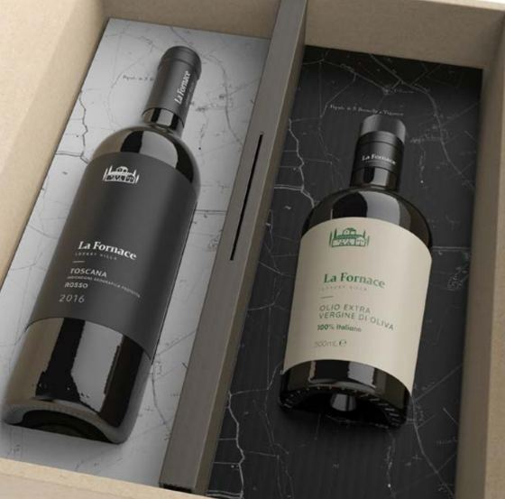

09 / 10 · lampada da tavolo
Oopar
Oopar («sopra» in hindi) è una lampada da tavolo a forma di occhio, simbolo di protezione nella cultura indiana. La luce dei LED si riflette su una sfera cromata sospesa nel foro centrale; dentro, un decoro in stile Madhubani retroilluminato.
- Con
- Rucina Jogani
- Premio
- 1° Pending Cultures
- Materiali
- noce, acciaio cromato

00 · intero
Un occhio di noce
Ruota con lo scorrimento. Scegli un capitolo per andare sul punto che spiega.
Larghezza300mm
Altezza195mm
Profondità200mm
Sfera Ø90mm
Riconoscimento2017
1° premio
Pending Cultures. Progetto con Rucina Jogani.

Prossimo · 10 / 10